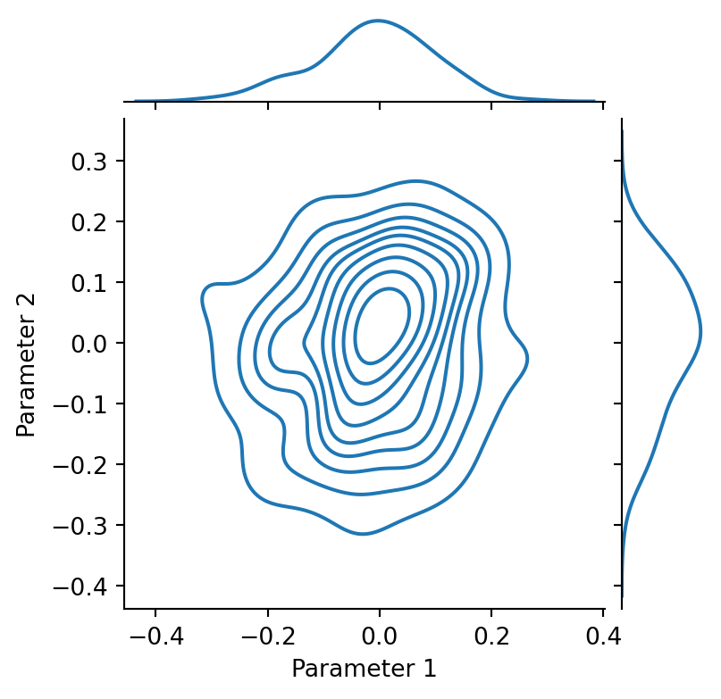

Show supplementary code
import numpy as np
import matplotlib.pyplot as plt
from jax.debug import print as jprintValerio Bonometti
February 5, 2023
In order to specify models in JAX we first need to figure out what are the core functionalities that we need to implement. We will focus on specific set of models that given an input \(X\), a target \(y\) and parameters \(\theta\) aim to approximate functions of the form \(f(X; \theta) \mapsto y\).
What we need to specify are:
We also need to make sure that while developing these functionalities we leverage the optimisations provided by JAX while avoiding its sharp edges.
The ideal way for storing parameters would be to create an immutable data structure (e.g., the named tuple example presented in our first post), registered as a pytree node, every time we need to update our parameters.
In this and future posts we will adopt a much simpler although more intuitive strategy and store our parameters in a dictionary.
The nice thing about dictionaries is that they are:
One of the first step when fitting a model to the data is to set the starting point for the optimization process for each of the considered parameters.
We can achieve this by defining functions that implement specific initialisation strategies
def ones(init_state, random_key):
"""Initialise parameters with a vector of ones.
Args:
init_state (Tuple): state required to
initialise the parameters. For this initializer only the parameters shape is required
random_key (PRNG Key): random state used for generate the random numbers. Not used for this type of initialisation.
Returns:
param(DeviceArray): generated parameters
"""
params_shape, _ = init_state
params = jnp.ones(shape=params_shape)
return paramsone of the most straightforward strategies is to initialize all the parameters with the same constant value (a one in this case).
In this case we our function requires an init_state tuple containing all the information necessaries for initializing the parameters and a random_key used for setting the state of the random number generator. In this case we really do not need any random behaviour but we keep the signature for keeping compatibility with other initialisation strategies.
Another alternative is to generate starting values according to some statistical distribution, like a gaussian for instance
from jax.random import PRNGKey
from jax import random
import seaborn as sns
def random_gaussian(init_state, random_key, sigma=0.1):
"""Initialize parameters with a vector of random numbers drawn from a normal distribution with mean 0 and std sigma.
Args:
init_state (Tuple): state required to
initialize the parameters. For this initializer only the parameters shape is required
random_key (PRNG Key): random state used for generate the random numbers.
Returns:
param(DeviceArray): generated parameters
"""
params_shape, _ = init_state
params = random.normal(
key=random_key,
shape=params_shape
) * sigma
return params
master_key = PRNGKey(666)
my_parameters = random_gaussian(
init_state=((100, 2), None),
random_key=master_key,
sigma=0.1
)
grid = sns.jointplot(
x=my_parameters[:, 0],
y=my_parameters[:, 1],
kind="kde",
height=4
)
grid.ax_joint.set_ylabel("Parameter 2")
grid.ax_joint.set_xlabel("Parameter 1")
plt.show()
Sharing the parameters at this point is better understood as part of a state manipulation process. What do we mean by this? If we were to perform parameters update within a an object oriented framework we might do something among these lines
class Model:
def __init__(self):
self._parameters = np.array([0, 0, 0])
def add(self, x):
self._parameters += x
def subtract(self, x):
self._parameters -= x
def get_parameters(self):
return self._parameters
model = Model()
model.add(10)
model.subtract(5)
print(f"Updated Parameters {model.get_parameters()}")Updated Parameters [5 5 5]the parameters are part of the state of Model an get updated according to the behavior of add and subtract.
Since in JAX we have to stick to pure functions as much as we can, the obvious choice is to consider parameters as a state that is passed through a chain of transformation
from jax import jit
def parameters_init():
return jnp.array([0., 0., 0.])
@jit
def add(parameters, x):
return parameters + x
@jit
def subtract(parameters, x):
return parameters - x
parameters = parameters_init()
# parameters are passed to transformations
# and returned modified
parameters = add(parameters=parameters, x=10.)
parameters = subtract(parameters=parameters, x=5.)
print(f"Updated Parameters {parameters}")Updated Parameters [5. 5. 5.]